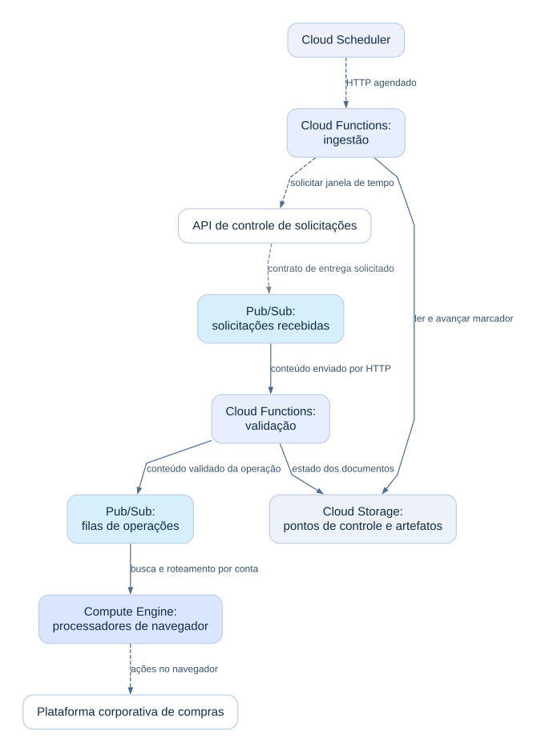
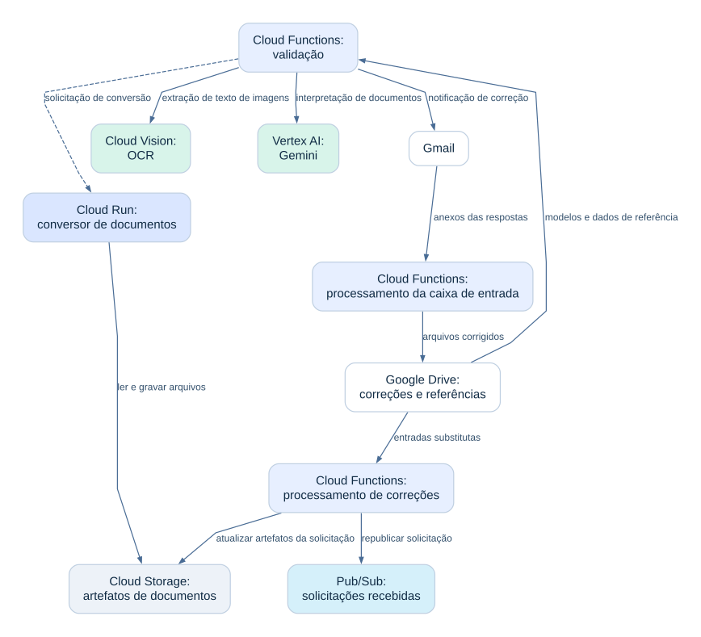
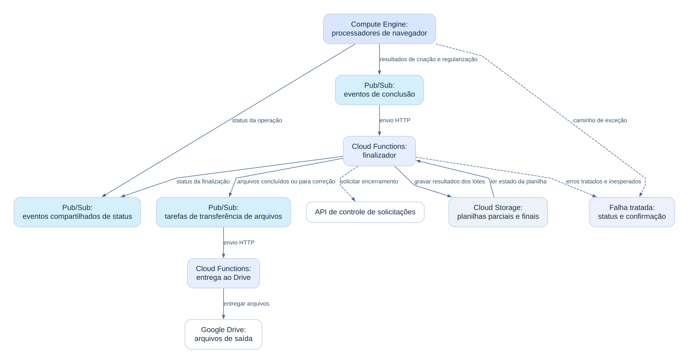
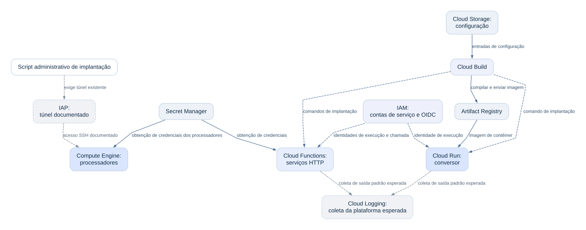
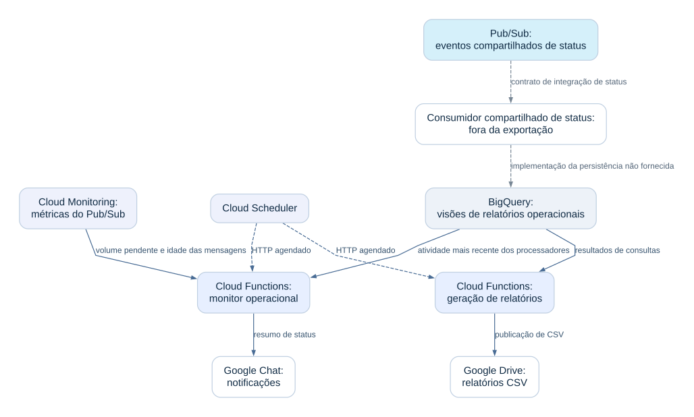

Dos documentos recebidos
às ações de compras.
Uma plataforma na GCP que conecta validação de documentos, roteamento de eventos, automação de navegador e relatórios operacionais.
O problema operacional
As solicitações de compras chegavam com planilhas e documentos de apoio. O processamento envolvia verificar a qualidade das entradas, interpretar anexos, buscar informações de referência, inserir informações em uma aplicação corporativa, tratar exceções e dar às equipes operacionais visibilidade sobre o andamento.
O desafio de engenharia era conectar essas atividades entre APIs, documentos, filas, sessões de navegador e ferramentas de relatórios, preservando o contexto da solicitação ao longo das etapas de processamento.
Como o sistema se conecta
O código define onze funções HTTP, um serviço de conversão em contêiner, três fluxos de automação de navegador e duas visões de relatórios. Esses números descrevem a estrutura do código; não são medições de tráfego nem de desempenho.
O Cloud Scheduler inicia tarefas operacionais agendadas. As funções de ingestão usam pontos de controle armazenados e chamam uma API de controle de solicitações. As mensagens recebidas pelo Pub/Sub chegam a um serviço de validação, que persiste o contexto da solicitação, normaliza as planilhas de entrada, aplica verificações de campos e referências e seleciona a rota de processamento adequada.
Um serviço no Cloud Run converte arquivos compatíveis. A extração local de texto, o OCR do Cloud Vision e o Gemini pelo Vertex AI apoiam a interpretação de documentos nos caminhos aplicáveis. A validação determinística e a interpretação assistida por modelo têm finalidades diferentes; as chamadas ao modelo não garantem a classificação correta de todos os documentos.
Os conteúdos validados são publicados em filas de operações. Processadores no Compute Engine consomem as filas e usam Playwright para interagir com a plataforma corporativa de compras. O roteamento por conta e a seleção de credenciais ajudam a associar as operações de navegador à conta pretendida.
Os fluxos de criação e regularização publicam eventos de conclusão. Um serviço de finalização registra os resultados dos grupos nas planilhas das solicitações, prepara saídas concluídas ou destinadas à correção, solicita o encerramento quando apropriado e publica tarefas de entrega. Uma função dedicada transfere arquivos para o Google Drive.
E-mail e Drive apoiam um caminho de correção: anexos substitutos podem ser coletados, incorporados aos artefatos armazenados da solicitação e republicados para validação. Funções separadas de relatórios e monitoramento disponibilizam informações operacionais por meio de relatórios CSV e notificações à equipe.
Acompanhe as conexões.
Entrada e roteamento de operações
A ingestão agendada solicita a uma API externa de controle a obtenção de solicitações. O Pub/Sub as entrega à validação, e as operações validadas chegam aos processadores em máquinas virtuais por filas separadas.

{kind=link}
As conexões contínuas transportam dados ou mensagens. As tracejadas representam chamadas de controle. A conexão da API externa com o tópico é um contrato de integração solicitado: a implementação dessa API está fora do código fornecido. O processamento de documentos e a conclusão são detalhados nas outras visões.
Interpretação e correção de documentos
Conversão de documentos, OCR e interpretação por modelo apoiam a validação. Anexos corrigidos recebidos por e-mail podem ser colocados no Drive, processados novamente e republicados.

{kind=link}
São caminhos condicionais, não uma sequência fixa para todas as solicitações. O Gemini é usado pelo Vertex AI. O Cloud Vision fornece OCR de imagens; o texto de PDFs também pode ser extraído localmente. Os processadores de correções e da caixa de entrada existem, mas a configuração completa de seus acionamentos recorrentes não foi fornecida.
Conclusão e tratamento de falhas
Os processadores publicam resultados dos lotes. O finalizador atualiza as planilhas das solicitações e encaminha arquivos para entrega. Falhas tratadas são registradas e confirmadas em vários caminhos do código.

{kind=link}
A proteção pelo nome da planilha detecta algumas tentativas repetidas de finalização, mas não oferece reserva atômica entre chamadas concorrentes. Tanto o caminho de exceção da máquina virtual quanto o finalizador podem confirmar operações com falha. A persistência compartilhada de status é uma dependência externa, e os arquivos exportados não estabelecem uma fila de mensagens não processadas.
Implantação e acesso
O Cloud Build define a implantação de contêineres e funções. O Artifact Registry armazena a imagem do conversor. A implantação nas máquinas virtuais usa um caminho administrativo separado e documentado.

{kind=link}
O gatilho de compilação, o provisionamento das máquinas virtuais, as atribuições de papéis e as políticas de recursos estão fora dos arquivos fornecidos. O uso de contas de serviço e OIDC é explícito; o menor privilégio não foi verificado. O IAP é um pré-requisito documentado do script de implantação nas máquinas virtuais. A coleta gerenciada pelo Cloud Logging é esperada pelo comportamento da plataforma; destinos personalizados e exportação de registros das máquinas virtuais não são mostrados.
Relatórios e visibilidade operacional
A geração agendada de relatórios lê visões do BigQuery e entrega arquivos CSV ao Drive. O monitoramento combina métricas do Pub/Sub com a atividade dos processadores e envia uma notificação à equipe.

{kind=link}
As mensagens de status são publicadas em uma interface de controle compartilhada. O componente que grava no BigQuery não está incluído, por isso sua persistência é mostrada como integração não verificada. O código de monitoramento lê a idade das mensagens e o volume pendente, mas alguns nomes de assinaturas diferem das filas provisionadas por conta. Os diagramas não afirmam cobertura completa de alertas.
Da entrada à saída
- Uma tarefa de ingestão agendada lê um ponto de controle armazenado e solicita uma janela de tempo à API externa de controle de solicitações. O contrato de saída solicitado inclui um tópico de entrada e um local para artefatos; a implementação da API externa está fora do código revisado.
- O Pub/Sub aciona a validação. O serviço preserva o contexto da solicitação, verifica as entradas obrigatórias, lê materiais de referência, normaliza tabelas e escolhe o fluxo de negócio.
- Os documentos são convertidos ou interpretados quando o fluxo exige. O Cloud Vision fornece OCR, enquanto o Vertex AI fornece classificação e extração assistidas por modelo.
- O validador publica conteúdos estruturados de operações. Os processadores em máquinas virtuais buscam mensagens, selecionam o fluxo de navegador adequado e estendem os prazos de confirmação durante o processamento.
- Os processadores de navegador atuam na aplicação de compras e reportam os resultados. Os resultados de criação e regularização passam por uma fila de conclusão até a finalização; outras operações têm caminhos próprios de status e encerramento.
- A finalização atualiza os resultados dos lotes, prepara planilhas de saída, encaminha tarefas de entrega e solicita o encerramento quando as condições de conclusão são atendidas.
- Os documentos corrigidos podem entrar em um fluxo separado de recuperação. Consultas ao BigQuery, entrega de CSV, métricas de filas e notificações à equipe fornecem visibilidade operacional.
Decisões de engenharia
| Decisão | Por que importa | Concessão |
|---|---|---|
| Funções sem servidor e processadores em máquinas virtuais | Tarefas HTTP e de processamento de dados curtas e operações de navegador com estado usam ambientes de execução diferentes | Operações de máquinas virtuais e navegadores exigem implantação e gerenciamento de sessões próprios |
| Pub/Sub entre as etapas | As responsabilidades de processamento podem ser separadas por contratos de mensagens | Reentregas e efeitos parciais exigem tratamento explícito |
| Armazenamento de objetos para documentos e estado intermediário | Serviços diferentes podem usar artefatos persistentes e o contexto da solicitação | Operações compartilhadas de leitura, alteração e gravação precisam de controles de concorrência |
| Conversor de documentos separado | As dependências de conversão ficam dentro de um serviço em contêiner | Acrescenta uma dependência de rede autenticada e tratamento de tempo limite |
| OCR, Gemini e validação determinística | Diferentes tipos de entrada podem ser interpretados e verificados | A saída do modelo precisa de validação e tratamento adequado de exceções |
| Visões do BigQuery para relatórios operacionais | Dados de status podem apoiar consultas e relatórios para download | O contrato de ingestão compartilhado e a granularidade do relatório exigem verificação separada |
Semântica dos dados e relatórios
A implementação trabalha com registros de solicitações, eventos de status operacional, referências a documentos, tabelas de itens e resultados de processamento agrupados. Os contextos de solicitação, sequência, execução e grupo conectam esses registros. Uma única solicitação pode ter vários eventos de status e vários grupos de processamento.
O SQL fornecido define duas visões de relatórios operacionais sobre dados de controle compartilhados. Ele não estabelece um armazém de dados dimensional, uma granularidade de uma linha por solicitação nem um fluxo de transformação no Dataform.
Controles e limites
Os mecanismos implementados incluem verificações de campos obrigatórios, validação de planilhas, tentativas limitadas em operações selecionadas de API e navegador, novas tentativas para erros de cota do Gemini, extensão do prazo de confirmação de mensagens, pontos de controle de consultas periódicas, estado parcial de planilhas, proteção contra finalização repetida baseada no nome do arquivo, obtenção gerenciada de credenciais e chamadas autenticadas entre serviços nos caminhos configurados.
Vários caminhos de erro confirmam as mensagens após registrar ou tratar a falha. O código não estabelece efeitos de negócio exatamente uma vez, atualizações atômicas de planilhas, uma fila de mensagens não processadas nem recuperação automática de todas as falhas. Os registros da aplicação e os eventos de status apoiam o diagnóstico; o monitoramento completo em produção, a cobertura das políticas IAM e a exportação de registros das máquinas virtuais não foram verificados de forma independente.
Todas as tecnologias utilizadas
| Serviço | Papel na arquitetura |
|---|---|
| Cloud Scheduler | Tarefas operacionais agendadas |
| Cloud Functions de segunda geração / Cloud Run functions | Onze funções HTTP definidas no código |
| Cloud Run | Conversão de documentos em contêiner |
| Compute Engine | Processadores de navegador com Playwright |
| Pub/Sub | Solicitações recebidas, roteamento de operações, conclusão, entrega e eventos de status |
| Cloud Storage | Configurações, conteúdos de mensagens, documentos, pontos de controle e artefatos de saída |
| BigQuery | Consultas de referência e visões de relatórios operacionais |
| Vertex AI / Gemini | Classificação de documentos, extração e interpretação de evidências |
| Cloud Vision | OCR de imagens e documentos digitalizados |
| Secret Manager | Obtenção de credenciais de aplicações |
| Cloud Monitoring | Métricas de filas do Pub/Sub |
| Cloud Build | Definições de compilação e implantação |
| Artifact Registry | Distribuição de imagens de contêiner |
| IAM / OIDC | Contas de serviço e chamadas autenticadas; políticas completas não fornecidas |
| IAP | Pré-requisito documentado de túnel administrativo; configuração não verificada |
| Cloud Logging | Coleta esperada de registros dos serviços gerenciados; destinos personalizados e coleta das máquinas virtuais não verificados |
| Google Drive, Gmail, Google Chat | Documentos do Workspace, comunicações de correção, relatórios e notificações |
| API externa de controle de solicitações | Ciclo de vida das solicitações e contratos compartilhados de status |
| Plataforma corporativa de compras | Ações operacionais executadas pelo navegador |
Python, pandas, openpyxl, FastAPI, Pydantic, Docker, Playwright, LibreOffice e PyMuPDF apoiam a implementação. São tecnologias, não serviços adicionais da GCP.
Resultados e contribuições
O código demonstra caminhos de processamento conectados, desde a entrada de solicitações até ações de compras, tratamento de exceções, entrega de documentos e relatórios operacionais. Ele fornece evidências concretas da complexidade de integração e implementação. Volume processado, tempo economizado, redução de custos, precisão do modelo e melhorias de negócio não foram medidos de forma independente para este estudo de caso.
| Engenheiro | Contribuição a confirmar |
|---|---|
| Bruno Santos | [Confirmar componentes sob sua responsabilidade, decisões de engenharia e responsabilidades operacionais] |
| Gabriel Silva | [Confirmar nome público, componentes sob sua responsabilidade, decisões de engenharia e responsabilidades operacionais] |
Onde essa experiência se aplica
Essa experiência apoia conversas sobre integrações entre nuvem e APIs, fluxos de processamento de documentos, automação operacional, validação de entradas, processamento orientado a eventos e relatórios operacionais no BigQuery. Cada contratação deve começar com um contrato de entrada e saída definido, uma entrega delimitada e critérios de aceitação acordados.
Esta é uma apresentação original e anonimizada de experiência profissional. Ela descreve a arquitetura sustentada pelo código e limites explicitamente identificados. Nomes, contribuições individuais e permissão de publicação precisam ser confirmados pelos responsáveis antes do lançamento.